Demonstrates how to use the thermal modeling package
The spacecraft is a cube with two solar wings. ------------------------------------------------------------------------ See also SpaceCamera, SpaceThermalCamera, SpacecraftThermal, PlotThermal, DrawSCPlanPlugIn, QForm, QLVLH, QPose, TimeGUI, FindSolsticeOrEquinox, RVFromKepler, SolarFlx, SunV1, AutoPoint, CameraDatabase, ThermalImager ------------------------------------------------------------------------
Contents
%------------------------------------------------------------------------------- % Copyright (c) 1998-2003, 2007 Princeton Satellite Systems, Inc. % All rights reserved. %-------------------------------------------------------------------------------
Load the CAD model
%------------------- g = load('SCForImaging'); DrawSCPlanPlugIn(g); % Initial rotation of solar arrays %--------------------------------- g.body(2).bHinge.angle = 0; g.body(2).bHinge.axis = 2; g.body(3).bHinge.angle = 0; g.body(3).bHinge.axis = 2;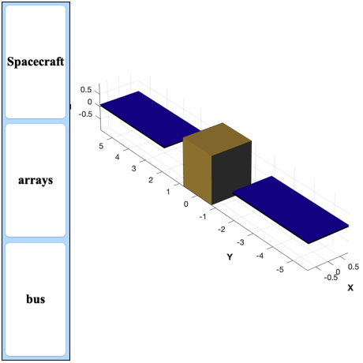
Set up the simulation
%----------------------- global simulationAction simulationAction = 'Do Nothing'; % Ephemeris %---------- jD0 = FindSolsticeOrEquinox('spring equinox',2002); nDays = 2; nSamp = 300; t = linspace(0,nDays,nSamp)*86400; jD = jD0 + t/86400; dTSim = t(2)-t(1); % Spacecraft orbit (GEO) %----------------------- [rECI, vECI] = RVFromKepler( [42167 0 0 0 0 0], t ); % Camera %------- camera = CameraDatabase('256 square'); camera.up = [0;-1;0]; camera.focalLength = 0.05; % Initialize the picture in SpaceCamera %-------------------------------------- % The optical camera qECIToLVLH = QLVLH( rECI(:,1), vECI(:,1) ); g.body(1).bHinge.q = QPose(qECIToLVLH); g.rECI = rECI(:,1); g.qLVLH = qECIToLVLH; g.name = 'Satellite'; d = struct('position',[]); d.planetName = 'Earth'; d.camera = camera; tagVisibleCameraWindow = SpaceCamera( 'initialize', d, g, jD(1) ); % The thermal camera %------------------- figH = findobj( 'tag', tagVisibleCameraWindow ); h = get( figH, 'UserData' ); d.position = get(h.fig3D,'position') + [camera.xPixels 0 0 0]; d.planetName = 'Earth'; d.camera = camera; d.imagerFunction = @ThermalImager; d.colorMap = hot; d.tempMax = 700; g.temperature = 300*ones(length(g.component),1); d.name = 'SpaceThermalCamera'; tagInfraredCameraWindow = SpaceCamera( 'initialize', d, g, jD(1) ); % Environment data for thermal temperature model %----------------------------------------------- e = struct; flux0 = SolarFlx(1); e.planet = 'earth'; e.planetRadius = 6378.165; e.s = flux0*SunV1(jD(1)); % Watts/m^2 e.tSamp = dTSim; e.shadow = false; e.showScans = false; e.nScanLines = 10; e.units = 'm'; % Initialize the flux and temperature arrays %------------------------------------------- q = zeros(length(g.component),nSamp); temp = zeros(length(g.component),nSamp); % Now run the simulation %----------------------- qLVLHToBody = Mat2Q([0 0 -1;0 1 0;1 0 0]); [ ratioRealTime, tToGoMem ] = TimeGUI( nSamp, 0 );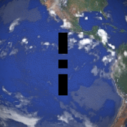 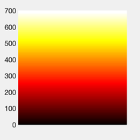 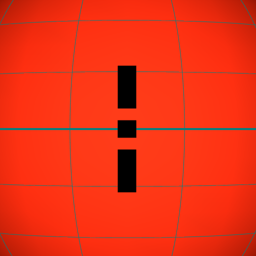 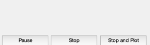
Loop through the disturbances
%------------------------------- for k = 1:nSamp [ ratioRealTime, tToGoMem ] = TimeGUI( nSamp, k, tToGoMem, ratioRealTime, dTSim ); % Update solar ephemeris %----------------------- [uSun, rSun] = SunV1(jD(k)); e.s = flux0*uSun; e.r = rECI(:,k); e.v = vECI(:,k); e.rSun = rSun*uSun; % Sun vector %----------- qLVLH = QLVLH( rECI(:,k), vECI(:,k) ); uSunLVLH = QForm( qLVLH, uSun ); theta = atan2( uSunLVLH(1), uSunLVLH(3) ); % CAD body structure %------------------- g.body(1).bHinge.q = QPose(QMult(qLVLH,qLVLHToBody)); g.body(2).bHinge.angle = theta; g.body(3).bHinge.angle = theta; g.rECI = rECI(:,k); g.qLVLH = qLVLH; % Update the temperature %----------------------- p = SpacecraftThermal( 'run', g, e ); % Draw the picture %----------------- [qCamera,rCamera,distance] = AutoPoint( 'above', camera, g ); camera.rBody = rCamera; camera.qBody = qCamera; camera.distance = distance; g.temperature = p.temperature; SpaceCamera( 'update camera', tagVisibleCameraWindow, camera, jD(k) ); SpaceCamera( 'update spacecraft', tagVisibleCameraWindow, g, jD(k) ); SpaceCamera( 'update camera', tagInfraredCameraWindow, camera, jD(k) ); SpaceCamera( 'update spacecraft', tagInfraredCameraWindow, g, jD(k) ); % For the plots %-------------- q(:,k) = p.qTotal; temp(:,k) = p.temperature; % TimeGUI control %----------------- switch simulationAction case 'pause' pause simulationAction = ' '; case 'stop' return; case 'plot' break; end end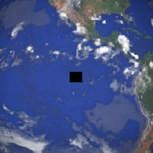 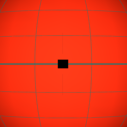 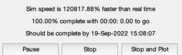
Plot the results
PlotThermal( q(:,1:k), temp(:,1:k), t(1:k), g );
%--------------------------------------
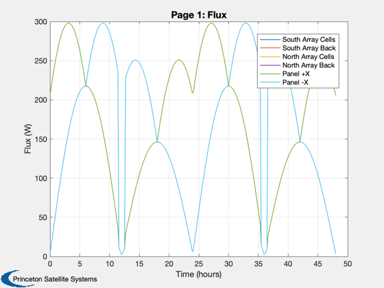 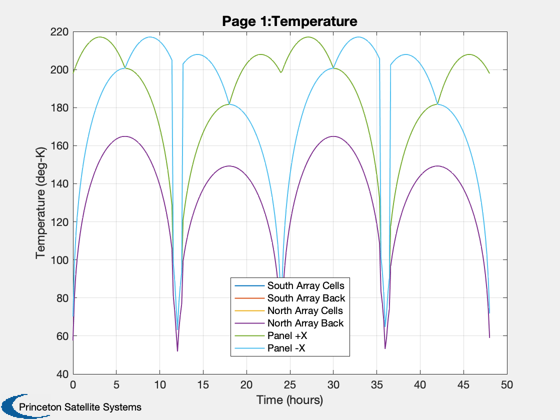 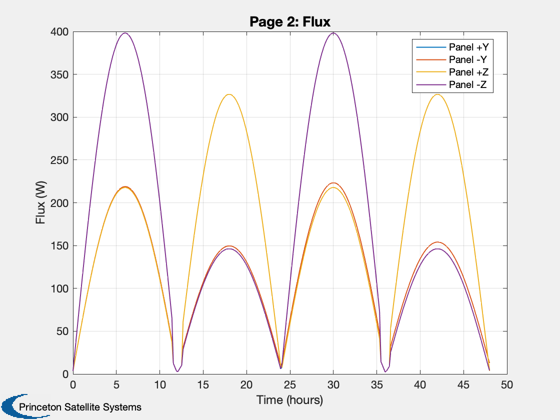 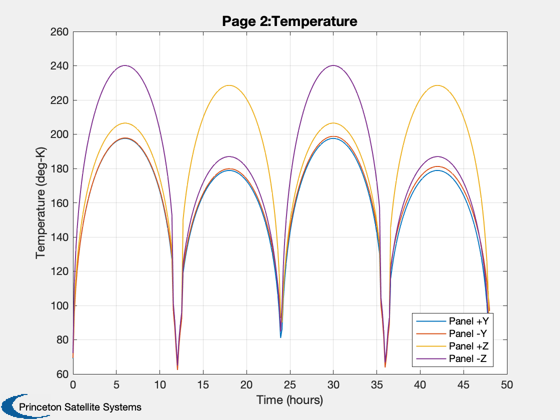